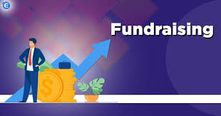
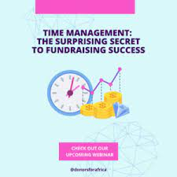

Ongoing Projects
- Project 1: "Youth Empowerment through Digital Skills: Bridging the Digital Divide".
- Project 2: Fundraiser Time Management.
Introduction:
In today's increasingly digital world, access to digital skills is crucial for youth empowerment and employability. Our non-profit organization, "DigitalYouth," is committed to bridging the digital divide and providing opportunities for young people.
Project Description:
Digital Skills Workshops:
We conduct digital skills workshops in underserved communities, teaching young people essential digital literacy, computer programming, and online job-seeking skills.
Technology Access Centers:
We're in the process of establishing Technology Access Centers in community centers and libraries, providing free access to computers, the internet, and educational software.
Mentorship Program:
Our mentorship program pairs experienced tech professionals with young participants, offering guidance, career advice, and networking opportunities.
Online Learning Platform:
We're developing an online learning platform offering a range of free digital courses, making education accessible to youth beyond workshop locations.
Progress:
To date, we've conducted 30 digital skills workshops, empowering over 500 young individuals with valuable skills.
Three Technology Access Centers are operational, serving as community hubs for digital learning.
The mentorship program has 15 active mentor-mentee pairs, fostering career growth and confidence among youth.
Our online learning platform is in the final stages of development and will launch soon.
Your Support:
To continue empowering youth through digital skills, we rely on your support. Donations, volunteering, and spreading awareness can help us bridge the digital divide and provide opportunities for young people to thrive in a digital world.
Conclusion:
"DigitalYouth" is dedicated to ensuring that all young people have access to digital skills and the opportunities they provide. With your support, we can equip youth with the tools they need to succeed, bridging the digital divide and creating a brighter future for the next generation.

 